Chapter 13
19 min read
It maybe unlucky for some but I’m going to start this chapter 13 by announcing that I’m not going to give you an answer to the scenario — yet. Instead, I’m going to give you some analysis just in case you’re needing a bit of help. If you’re some wizard that has already worked through the scenario, determined the right strategy and have a solution then that’s fine, you can skip unlucky 13 and head straight into the next chapter. This is more for the rest of us mere mortals, who like me, have found themselves totally lost when faced with problems such as the scenario. I’m not going to use any additional information other than that already provided — in other words, there’s no mystery character inserted in the last paragraph that committed the crime, see all those loathsome detective novels that make you go “where did that come from?”
I’m also going to explain this analysis in quite some detail. I apologise in advance if this is tedious but I’ve spent a lifetime reading mathematics texts which go — “it is therefore obvious that” — only to continuously discover that it’s not obvious to me. I am going to start by creating a map of the environment and use it with some of those basic climatic patterns. I’m also going to add in a bit about market position, that’ll become clear as we go through. Remember maps are just a communication tool and so feel free to annotate and adapt them as you need.
From this basic map, we’re going to examine the state of the company and its proposed strategy. We’re finally going to use time-turner magic (for all you Harry Potter fans out there) to wind the clock back in time and give you a chance to choose your order again and decide once more what you want to say to the executive board.
To start with, we need to create a basic map. The company unfortunately doesn’t talk a great deal about user needs but we can infer that the user need is either about saving money or being green (possibly even a legal requirement). This need requires some form of efficiency analysis which is provided by the company as a product — Phoenix. We also know the market whilst reasonably sized (£301 million) is seen to be far smaller than the applicable market (£3 billion) and so the market of clients is not yet fully mature. Hence to begin with, I’m just going to add client which needs efficiency analysis to our map and position the pieces roughly where I think they should be (see figure 167).
Figure 167 — starting the map
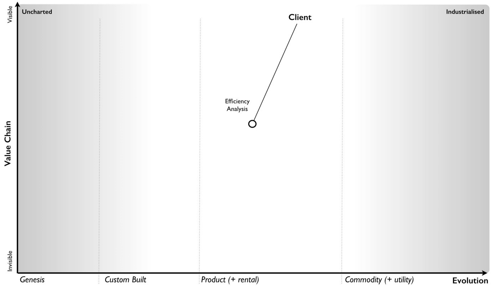
I also know that Phoenix requires some form of sensor and this sensor seems to be a highly expensive product. The clue that this isn’t some form of resource constraint is that a more commodity version is provided in China. I also know that the sensor (or at least the system using the sensor) requires some form of custom built data set which our own in-house IT team creates. I’m not quite sure how this operates but for the time being I’ll attach this as a need for the sensor.
Finally, I’m aware that Phoenix has some form of system logic based upon best practice use of the sensors. I know that changing the sensor to multiple commodity sensors would “require a complete rewrite of Phoenix” (the CDO told us this). So, I can now extend my map with these components (figure 168). It’s not perfect, no map ever is. I’ve marked on the sensor logic as a practice (i.e. it seems to be connected with how we use sensors) and the environmental data as data.
Figure 168 — extending the map with practice and data
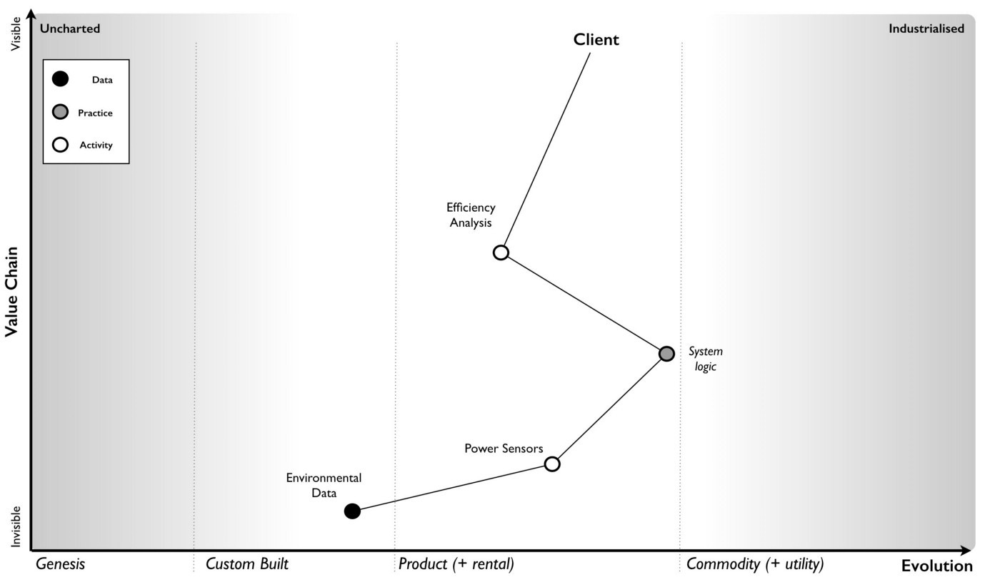
The head of marketing also told us that the US was a more mature market and Brazil was less developed in the area of such efficiency analysis software. I’ll assume that the markets are competitive (i.e. there is supply and demand competition) particularly since we’re talking about setting up a business in Brazil. It’s a bit of a gamble but I’ll assume that the head of marketing has done at least a small modicum of homework. We can now mark on these markets, with lines (red dotted) to describe how they are changing — see figure 169.
Figure 169 — adding markets
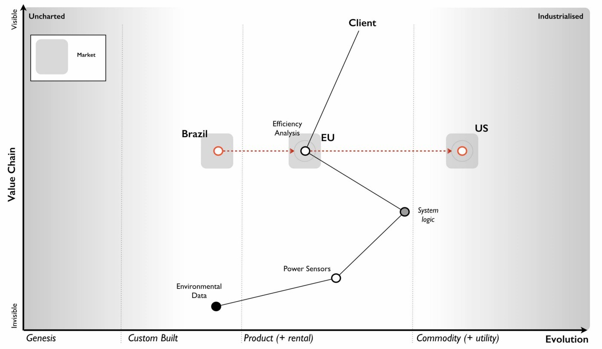
We also know that a range of “more commodity like sensors” have been launched in China and that there is now a “data set available on the market” which I’ll assume is some form of product or rental arrangement. Obviously there’s a couple of assumptions here but these could be clarified with a few questions. I’ve marked on these changes to the map in figure 170.
Figure 170 — Adding China and the data set
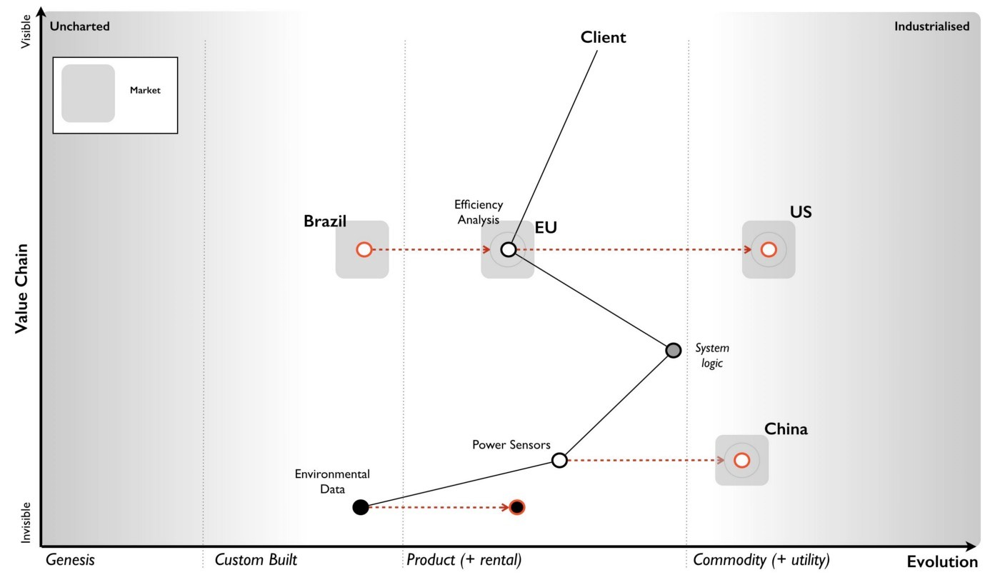
Now, whilst it might not be a perfect map, it does provide us some form of overview on the environment and certainly something we can use to challenge the assumptions I’ve made. There is however a bit more to add.
We can infer from the comments on the US competitor, the company’s plans for Phoenix’s own cloud solution to represent a mere 10% of revenue by 2023, their pride at the “technological marvel they have created” and the statement that “security concerns cited by some clients due to their cloud approach” that this group will have some inertia to the cloud change. We also know more explicitly that with the commodity sensors being described as “not good enough for the the job” and an alternative path of using “lots of the cheaper sensors” being widely dismissed despite the cost of the sensors, the price differential and customer concerns over cost that we will find resistance to change here as well. We should add this inertia to our map (figure 171).
Figure 171 — Adding inertia.
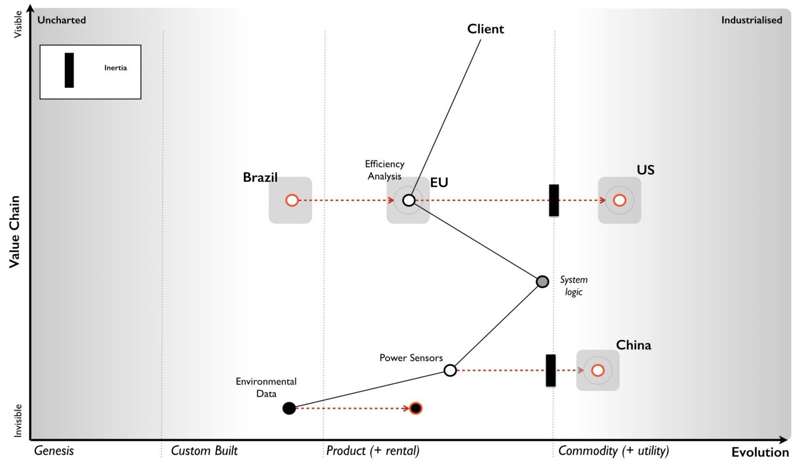
In our market, we have a US player that is also operating in the more mature US market. They are already providing features we do not (we will assume this mets some user need which we might possibly not be aware of), they have companies building novel components and potentially products on top of their API and the system they are offering is more of a utility.
It’s still based however on the expensive sensors and we can assume they have developed their own system logic which is equivalent to ours. I’ve added this into figure 172.
Figure 172 — the US player
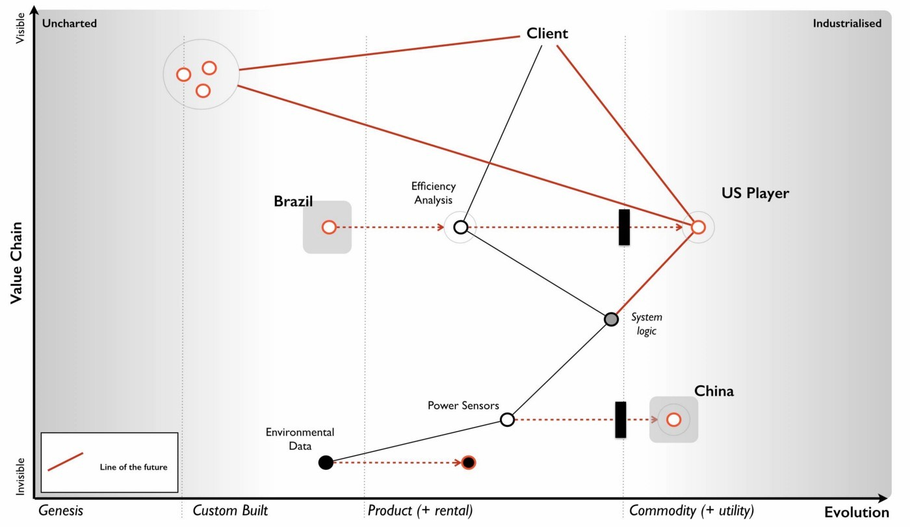
The shift towards more utility versions requires four factors — concept, technology, suitability and attitude (see chapter 11 — charting the future). In this case concept, suitability and technology clearly exist as we have a US competitor providing the service. In terms of attitude then it’s a question of whether your clients are dissatisfied with the current method of provision. It’s not the 90% of customers rating Phoenix as good to high levels of satisfaction that concern me, it’s the 10% who didn’t. Specifically, the concern of a “high cost of the system in the market as was noted in the customer survey”. I’m going to assume therefore that we are firmly on the path towards utility as the factors seem to be there and a player is already making that move.
The US player claims to be “doubling in size each year” and the anticipated revenue growth from £15M to £25M is somewhat supportive of this especially if we consider the potential for economies of scale and price cuts. Alas, we have no information to confirm that consideration. We should note that they have a “fairly active development community” growing around their API and have been accused of “eating up the business models of some of those product companies”. Contrary to this being a desperate act of cannibalisation, it is more likely part of an ILC like gameplay (as described in chapter 5 — the decision to act).
This is exceedingly dangerous as the larger that ecosystem grows then the more innovative, more efficient and more customer focused the competitor becomes. They are already ahead of us in both utility forms, provision of an API and core features. Let us add this bit of gloom and doom to our map.
Figure 173 — Ecosystem moves of the US player
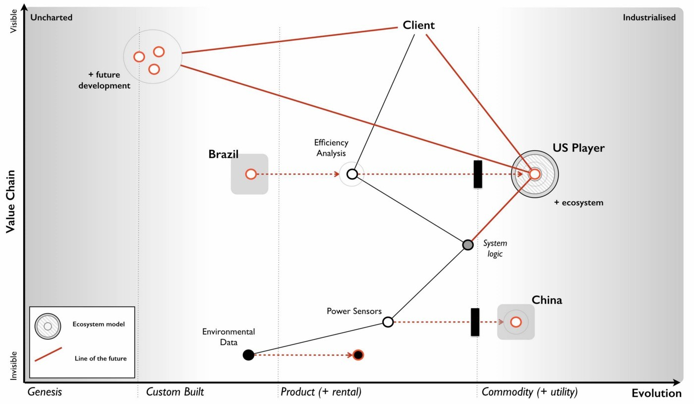
In the “P&L” provided by the CFO we have revenue forecasts all the way to 2021, a very wishful bit of thinking. We know the shift from product to utility tends to demonstrate a punctuated equilibrium and so it’s not unreasonable to assume the growth rate of the US player will continue. This is usually one those hard things to accept because we get comfortable with the illusion of a perceived slow change from one product to another product (see Chapter 10 — I wasn’t expecting that). It can take 20 to 30 years, sometimes more for the product industry to develop and then 10 to 15 years for it all to be dismantled. For Phoenix, this war has been going on regardless of whether the company is aware or not.
Added on top of that an ILC model then this growth rate is likely to be reinforced because the US player will extend further ahead of Phoenix. Hence we can add our predicted revenue and extrapolate the US revenue onto the same graph — see figure 174.
Figure 174 — revenue forecasts
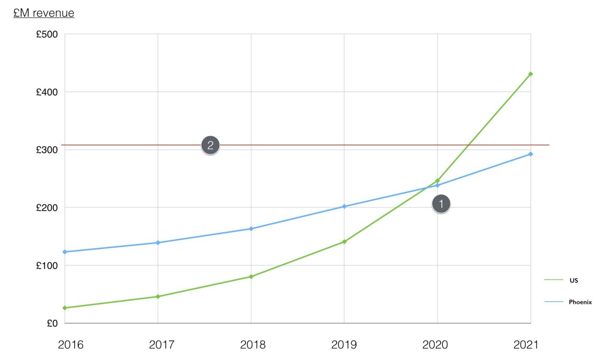
There are a couple of comments worth noting. First (point 1) is that by 2020 or thereabout the US player will be about the same size of revenue as Phoenix. The problem is the US player will be an entirely cloud based service with a large ecosystem that they are using to sense future changes. Our Phoenix cloud service would have just launched and we will be a startup, a minnow after spending £45 million in a future market that is dominated by this US giant. Even by 2023 our cloud revenue is only expected to be 10% of our overall revenue. This is calamitous.
To compound this the current market is only just north of £300M (point 2) and by 2020 then the combined revenues of Phoenix and the US player will vastly exceed this. Even given growth of the current market, we can assume we’re going to be head to head in a battle with the US player. One of us is not going to get what we’re hoping for. Unfortunately, we will be playing the part of David with our trusty sling versus a Goliath who has turned up with an entire army of brothers armed with general purpose machine guns. This is not going to be pretty for us. Alas it gets worse.
In chapter 9 — charting the future — we discussed the concept of co-evolution of practice with activity. Looking at our map, we can apply the same pattern to sensors. The commodity sensors available in China are likely to trigger an entire new set of practices. Our CIO hinted at this with the statement “a potential solution could be to use lots of the cheaper sensors” which our CDO dismissed with the normal inertia of one wedded to a past practice — “require a complete rewrite of Phoenix”. Whether we like it or not, a new emerging practice is coming and our existing system logic needs the rewrite (see figure 175).
Figure 175 — Co-evolution of practice with activity
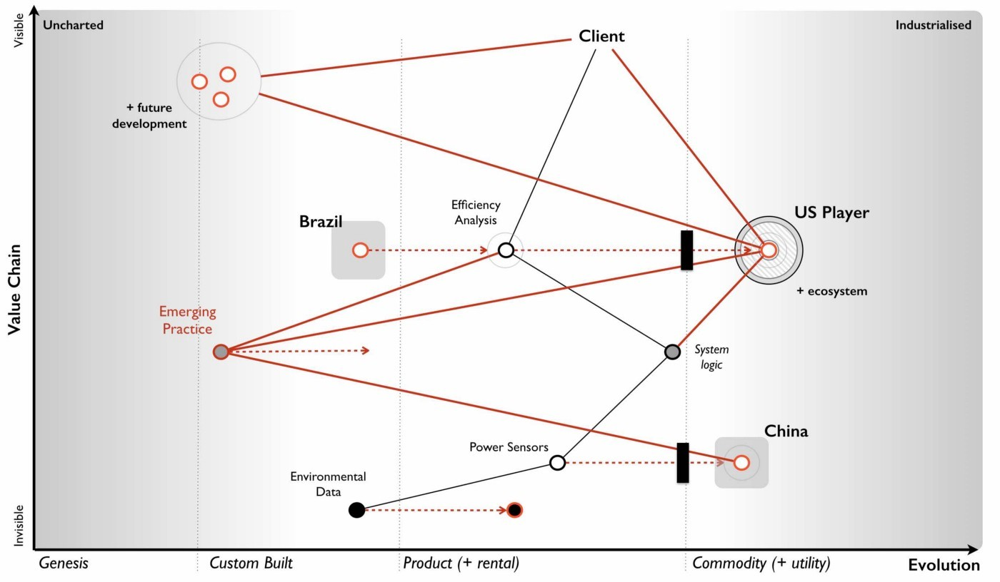
What this means is not only do we have a future battle with a Goliath but the entire system logic of Phoenix and our code based that is built upon years of good to best practice with these highly expensive sensors is about to become legacy. I’ve summarised this all in the map below (figure 176) dropping the line between the co-evolved practice and our product as that is fairly redundant. Of course, someone is bound to suggest we do that at some point in the future, however I’d rather focus on where the future is going i.e. utility rather than futility. We will use this map to examine the company strategy.
Now, you might argue with the position of pieces on the map or components that have been missed or assumptions that have been made but that’s the entire point of a map. To expose all of this in a visual form that we can then challenge.
Figure 176 — The Map
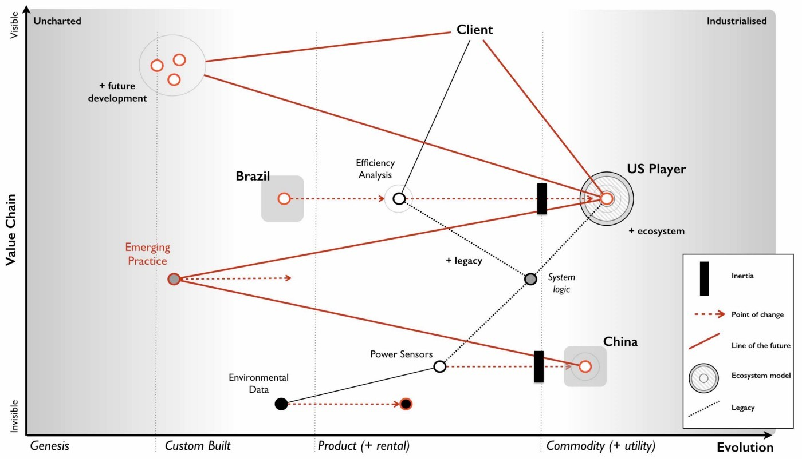
With our map in hand, let us now look at the strategy of the company. I’ve marked on each point which relates to the strategy in figure 177 and we will go through each in turn.
Figure 177 — The Strategy
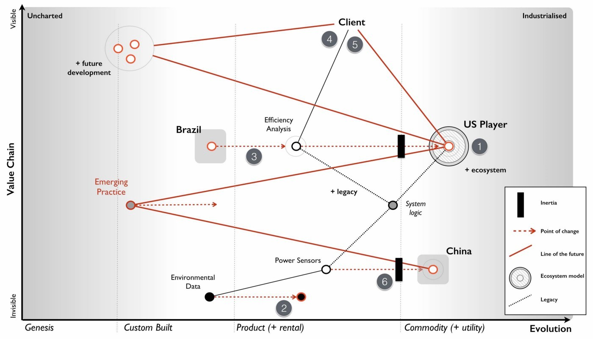
Point 1 : Creation of a digital “cloud based” service for provision of the software. By the time our cloud service hits the market in 2020, we’re likely to be a minnow against a giant with a well developed ecosystem model. If they’re running an ILC model which seems possible then they will be out innovating us, more efficient, more customer focused and larger. They will be far ahead of us and our cloud effort doesn’t even mention building an API or running any form of ecosystem game. To cap it all off, we’re even bringing an old licensing model with us and a system logic that is likely to become legacy and replaced by co-evolved practice. In terms of getting it wrong, this is a fabulous way of wasting £45 million.
Point 2 : Investigating the use of the data conversion product that is available in order to improve efficiencies and reduce cost. A fairly sensible proposal on cost efficiency but not one that should be high up the priority list in such a battle.
Point 3 : Expansion of existing product into overseas markets such as Brazil. It might create some short term gain but this is also a dangerous path. Our business model in a more mature market is going to be chewed up but rather than face this, we’re going to take our model and attempt to re-apply it to a less mature or emerging market. All that will happen is our competitor will chew up both markets and we are simply spending money laying the groundwork for them to attack the emerging market. It would probably be more favourable to our shareholders to give half the money to the competitor for marketing in Brazil and return half the money to the shareholders than to build up future liability. This isn’t as bad as the cloud effort but this will increase inertia to change due to the belief that the short term gain translates to our past model still being successful.
Point 4 : Increasing the development effort on our existing product line including more advanced reporting and other innovative features. There is always value in focusing on user needs but in this case we’re not addressing the problem of our competitor but patching over it in the very short term. Unfortunately for us, if the competitor is using an ILC model then we are in competition with the entire ecosystem that has built upon the competitor’s API. If for example that includes 200 software companies then our poor product development team is going up against the might of 200 software teams. This situation only gets worse as the ecosystem grows. This is a path of spending money and still losing by ever increasing margins.
Point 5 : Undertake a significant marketing campaign to promote our solution in the existing market. It doesn’t fix any of the problems but at least it might gives us a short term revenue boost.
Point 6 : Keep an eye on the sensors from China. Though not explicitly stated or highlighted as a strategy, it’s worth calling out that the approach is to keep a watchful eye on the sensors. Given the fairly predictable impact these will have, this is less than encouraging.
If you want to mess up strategy then the CEO has done a glorious job. Fortunately there’s also some opportunities to be considered. Firstly, the market in Brazil is an opportunity but re-using our old business model might not be the wisest idea.
Secondly, there was an interest in acquisition of this company. Just because you know it’s a future train wreck, this doesn’t mean others do (remember most don’t map). As someone who has done a bit of work in M&A then coming face to face with a company hurtling towards a cliff edge whilst there is “positive noise about the subsidiary from analysts and also some interest by third parties in potential acquisition” is surprisingly common and lucrative. You are a board member for the conglomerate and should look to maximise the opportunity.
Thirdly, the system logic is heading towards legacy and we will have our own DevOps moment with an emerging practice. Fortunately, we’re not the only ones facing this as the US company has the same problem. Maybe they’re not as smart as we think? Maybe they’re working on a solution? We don’t know but this is a potential weakness.
Lastly, there’s a final opportunity in the data set. Yes, a product is now available but that doesn’t mean we can’t try and out commoditise this and turn data into some form of utility with an open data play (point 1, figure 178).
Figure 178 — Turning data into a utility.
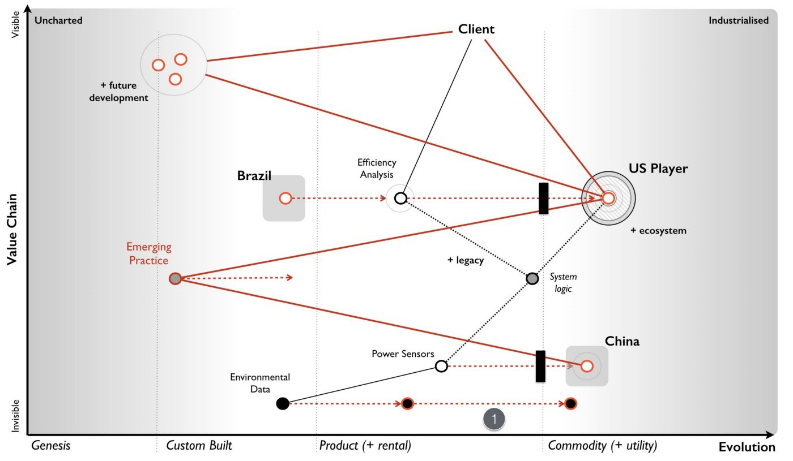
The strategy outlined by the subsidiary needs some serious work on it. However, before jumping the gun let us take a look at the company again. The strategy might be bad but the question is whether the company is recoverable in the time frame?
When I want to get a sense of company and its ability to adapt, to cope with the unexpected, to learn and to be resilient to competition itself then I start looking at the universal principles it applies. I’m not looking for resilience to known scenarios but our ability to adapt to the unknown and to cope with the flow of evolution. In this case the CEO talks about the values of the company which include “responsibility, integrity, transparency, compassion, empathy, adaptiveness and decisiveness.”
These values seem all perfectly reasonable, however there are two things to consider. Firstly, companies are often very good at saying one thing and then doing something else. Secondly, executives and consultants are often very good at coming up with simple “truths” that have no data behind them. I can only judge this in terms of what I have evidence for, hence the Wardley Doctrine in chapter 11 — the smorgasbord of the slightly useful.
For example, let us take empathy. It seems like it should matter, but does it? Is it a universal principle? What evidence do I have that it works in all cases and isn’t context specific? Maybe empathy matters more in a care home than on a factory line? I don’t know and so I can’t judge on this. However, there’s lots of things I was told in the scenario which I can comment on. I’ve highlighted the areas of doctrine in figure 179 using a green (for that warm fuzzy feeling), amber (for concern) and red (potential for setting off alarm bells) motif.
Figure 179 — Doctrine
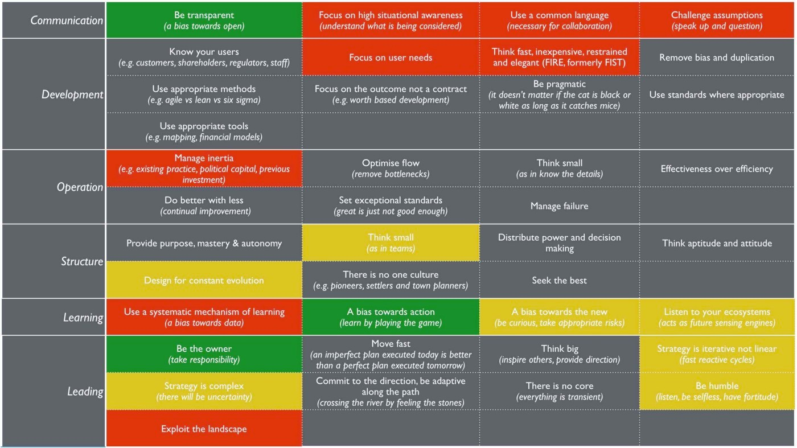
My areas of concern are :-
Design for constant evolution
When someone talks about how the “organisation was recently restructured” then this is a signal to me that the organisation didn’t cope with constant evolution. They may have reformed to a structure which now does but I see no evidence one way or the other.
Think small (as in teams)
Given the above, the discussion on how the “digital group will expand significantly over the next two years” raises an eyebrow. I’d want to know more, are we talking about a hefty department or some cell based way of operating (e.g. two pizza).
A bias towards the new (be curious, take appropriate risks)
The discussion about the sensors and how “it’s worth keeping an eye on the market” raises another eyebrow. I’d expect to see more directed action towards this change. I’m somewhat comforted by the use of the data set.
Listen to your ecosystems (acts as future sensing engines)
When your customers are concerned about the “high cost of the system in the market as was noted in the customer survey” then a response of “renewal price will be frozen for the next two years” is not encouraging.
Strategy is iterative not linear (fast reactive cycles)
There is nothing iterative about the strategy proposed. This might just be a reflection of the way it is presented but it’s worth a question.
Strategy is complex (there will be uncertainty)
There is no concept of uncertainty presented. It’s more a set of action statements and a plan which goes far into the future.
Be humble (listen, be selfless, have fortitude)
From “being instrumental to the company’s success” to the quote “some people just have not found adjusting to this new world that easy” to the observation that the company is “clearly proud of its accomplishments, the technological marvel they have created and their ability to deliver against their vision” then there’s a touch of entitlement and maybe a bit of arrogance to them.
My areas of concern pale into insignificance compared to the areas which might have me running out the door screaming, setting the klaxon off. These include :-
Focus on high situational awareness (understand what is being considered)
I see no evidence of this and a simple mapping of the environment has raised concerns that are not even discussed. I’d want to see clear evidence the company actually understands its environment.
Use a common language (necessary for collaboration)
I see an abundance of different graphics but no consistent mechanism of discussion other than verbal stories often laced with terminology. I’d want to understand how we actually communicate.
Challenge assumptions (speak up and question)
An extremely valid challenge over sensors was given by the CIO but dismissed and even described as being “discussed several times before”. The palpable sense of “frustration with the group and the CIO on this topic” indicates a team that is not listening. The answers given to the challenge are all symbols of inertia — pre-existing practice, assets etc. I’d be digging here.
Focus on user needs
The lack of description of user needs is significant. Statements like “The attrition rate has been high in recent years at 9% but the Sales team believes this is due to a lack of new features and a high cost of software license renewal” are all very well and good but I’m not interested in what the Sales team thinks, I’d want to know what the user needs and wants.
Think fast, inexpensive, restrained and elegant (FIRE, formerly FIST)
A £45 million investment on a cloud effort over two years is not what I’d be expecting from a company following FIRE principles. This may be a simple consequence of summarisation to an executive level but I’d want to see evidence that we’re not embarking on building some Death Star.
Manage inertia (e.g. existing practice, political capital, previous investment)
Whilst inertia appears to be clear, the only challenge to it (e.g. sensors) is knocked back. In fact the CEO got in on the act talking about intellectual property. I’d want to ask a few more questions here.
Use a systematic mechanism of learning (a bias towards data)
I see no evidence of this and of past lessons being applied. There’s no concept of climatic patterns or learning. I’d want to explore this more.
Exploit the landscape
I see no evidence of understanding let alone exploiting the landscape. It might exist in mental models and some form of intrinsic common understanding but I’m not overwhelmed by this.
In my analysis, the strategy is barking up the wrong tree and I have significant concerns over the company itself. I would not be confident that this company is either heading in the right direction or capable of adapting to the uncertain future. The only person I have some confidence in is the CIO that the company is so desperately trying to get rid off. But that’s me. Your analysis maybe different. You may have seen something I have not. So let us take this unlucky chapter 13, invoke some dark magic and do the time warp again.
You have a call in forty-five minutes with the executive board. That’s how long you have to make your choices. The clock is ticking. So find a stopwatch and start it.
Your first task is to determine whether the company is heading in the right direction. You should determine whether you agree with the priority order given in figure 180. If not, write down what your priority order would be. If you decide to invoke “other” then scribble down what that other is.
Figure 180 — Priority order
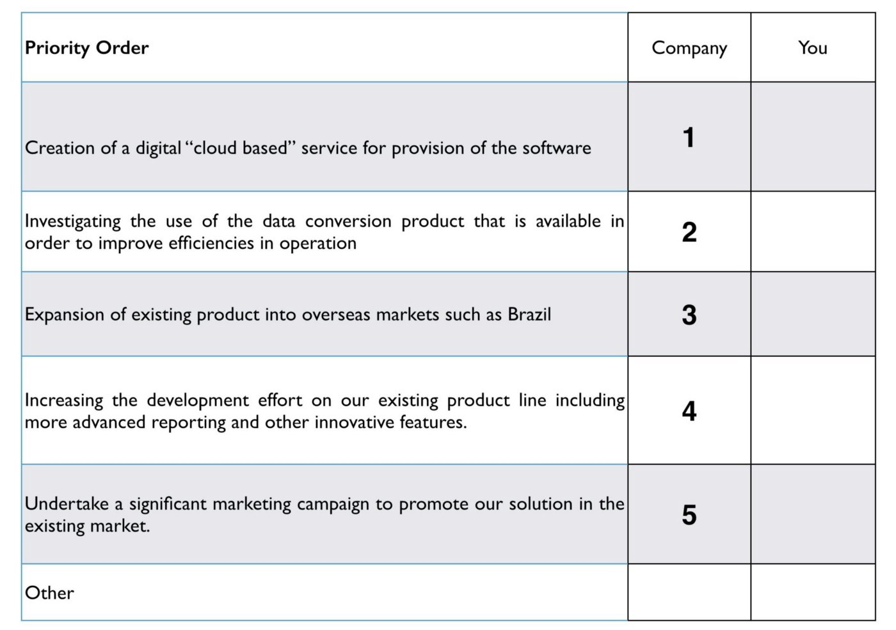
Once you’ve decided your priority order then your next task is to determine what you’re going to say to the executive board.
Do try the exercise and spend that forty-five minutes on it. If you get flummoxed then give yourself a bit more but set a time limit, no more than an hour and half. Force yourself to make a choice.
Though I’ve provided some analysis, there’s still a lot to think about. What is right for the company? What is right for the conglomerate that you’re a board member of? What options are open to you? How do you message this to both the company and the board? If you’re struggling then realise that’s good. This is a learning exercise and you don’t learn unless you challenge yourself and embrace difficult problems.
In the next chapter, I’ll give you my solution. Now, this doesn’t mean that my solution is the right one. There could be a myriad of better ways of dealing with this case. Maybe you’ve found one? Maybe you have a different analysis? All I can tell you is how I would solve it and through the medium of maps explain my reasoning and my choices. Being a map, you’re free to challenge any and all assumptions I’ve made. In fact, that’s the point of a map and I welcome the challenge because it gives me the opportunity to learn.